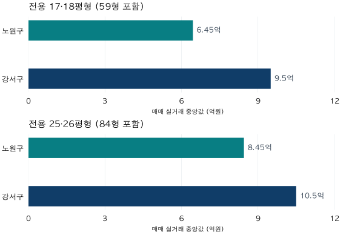

첫 집을 위한 가격 읽기 · 1 / 4
아파트 가격 비교, 무엇을 같게 맞춰야 할까?
2026년 6월 강서구·노원구 실거래를 비교했습니다. 면적군을 맞추면 가격 차이가 어떻게 달라지는지, 비교 전에 확인할 다섯 가지 조건을 살펴봅니다.
분석 기간 · 2026년 6월 계약 | 보유 자료 스냅샷 생성 · 2026-10-04
두 지역의 아파트 가격을 검색했습니다. 한쪽은 9억 5,000만 원, 다른 쪽은 8억 4,500만 원입니다. “1억 원 정도 차이구나”라고 생각하기 쉽습니다. 그런데 앞의 숫자는 작은 면적군, 뒤의 숫자는 큰 면적군의 거래를 요약한 값이라면 어떨까요?
차액 계산은 맞아도, 무엇을 비교했는지에 대한 설명은 빠져 있습니다. 첫 집을 위한 가격 읽기는 여기서 시작합니다. 금액을 비교하기 전에, 숫자 옆에 붙어 있는 조건부터 맞춰봅니다.
1. 가격 옆에 붙일 다섯 가지 조건
“이 동네는 10억 원이다”라는 말에는 생략된 내용이 많습니다. 최근 거래 한 건인지, 한 달 동안 거래된 아파트의 중앙값인지부터 알 수 없습니다. 가격을 적을 때 아래 다섯 가지도 함께 적어두면 비교의 출발점이 분명해집니다.
- 면적 기준
- 전용면적인가, 공급면적인가? 같은 ‘평형’이라는 표현도 기준이 다를 수 있습니다. 비교 자료의 ㎡와 면적 종류를 확인합니다.
- 계약 시점
- 언제 계약한 거래인가? 작년의 거래와 이번 달의 거래를 비교하면 주택 차이와 시장 변화가 함께 섞입니다.
- 지역 범위
- 구 전체인가, 동네인가, 특정 단지인가? 구 전체의 가격을 내가 보는 한 단지의 가격으로 받아들이지 않습니다.
- 집의 특성
- 연식, 층, 역과의 거리, 주택 상태는 어떤가? 면적과 지역이 비슷해도 비교 대상의 구성이 다를 수 있습니다.
- 숫자의 종류
- 실제 거래금액인가, 매도자가 제시한 호가인가, 여러 거래의 평균·중앙값인가, 모형 추정가격인가? 서로 다른 숫자를 같은 뜻으로 읽지 않습니다.
다섯 가지를 모두 완벽하게 맞춘 자료를 찾기는 어렵습니다. 중요한 것은 맞춘 조건과 아직 맞추지 못한 조건을 구분하는 것입니다. 이번에는 같은 계약월과 같은 전용면적군부터 맞춰보겠습니다.
2. 강서구·노원구 실거래로 확인하기
서울 강서구와 노원구의 2026년 6월 계약을 비교했습니다. 지역 전체의 우열을 가리기 위한 표본이 아니라, 동일한 두 지역도 비교 기준에 따라 차이가 달라지는지 살펴보는 교육용 사례입니다.
가격은 각 지역·면적군에서 조건을 충족한 거래금액의 중앙값입니다. 중앙값은 금액을 순서대로 놓았을 때 가운데에 해당하는 값입니다. 거래 수가 짝수라면 가운데 두 금액의 평균을 사용합니다. 모든 금액을 더해 거래 수로 나누는 평균가격과는 다릅니다.
‘전용 17·18평형’은 59㎡형이 포함된 묶음, ‘전용 25·26평형’은 84㎡형이 포함된 묶음입니다. 정확히 59㎡ 또는 84㎡인 거래만 추린 것이 아니며, 분양 안내에서 보는 공급면적 평형도 아닙니다. 세부 묶음 방식은 아래 분석 방법에 적었습니다.

2026년 6월 계약 · 명목 거래총액 · 국토교통부 실거래 자료를 파파펭귄이 집계. 그림의 두 패널은 같은 금액 눈금을 사용합니다. 거래 수는 아래 표에 함께 표시했습니다. 그림 원본 보기

| 전용면적군 | 노원구 | 강서구 | 중앙값 차이 |
|---|---|---|---|
| 17·18평형 | 6억 4,500만 원159건 | 9억 5,000만 원89건 | 3억 500만 원 |
| 25·26평형 | 8억 4,500만 원142건 | 10억 5,000만 원99건 | 2억 500만 원 |
거래 수는 이번 집계 조건을 충족한 계약 건수입니다. 전체 주택 수나 매물 수가 아닙니다. 두 면적군 이외의 거래는 이 표에 포함하지 않았습니다.
3. 면적을 맞추면 무엇이 달라질까?
도입부의 두 숫자를 다시 보겠습니다. 강서구의 전용 17·18평형 중앙값은 9억 5,000만 원, 노원구의 전용 25·26평형 중앙값은 8억 4,500만 원이었습니다. 서로 다른 면적군을 비교한 차이는 1억 500만 원입니다.
이번에는 같은 면적군끼리 나란히 놓아봅니다. 전용 17·18평형에서는 강서구 9억 5,000만 원, 노원구 6억 4,500만 원로 3억 500만 원 차이입니다. 전용 25·26평형에서는 강서구 10억 5,000만 원, 노원구 8억 4,500만 원로 2억 500만 원 차이가 납니다.
관측한 사실은 두 가지입니다. 이번 달에는 두 면적군 모두 강서구의 중앙값이 더 높았습니다. 그리고 두 지역의 차이는 어느 면적군을 비교하는지에 따라 달랐습니다. 하나의 차액을 두 지역 전체에 적용하기는 어렵습니다.
“강서구와 노원구는 얼마 차이인가?”보다
“같은 달, 어떤 면적군의 거래를 비교하면 얼마 차이인가?”가 더 정확한 질문입니다.
그렇다고 작은 면적과 큰 면적을 비교하면 안 된다는 뜻은 아닙니다. “한 지역의 작은 집과 다른 지역의 큰 집 중 무엇을 선택할까?”는 실제로 필요한 비교입니다. 그때는 지역과 면적을 함께 바꾸는 선택의 비교라고 설명하면 됩니다. 이를 지역 차이만 측정한 결과로 읽지 않는 것이 중요합니다.
또한 두 집단의 중앙값 차이는 내가 고른 두 집의 실제 매매가격 차액이 아닙니다. 표에서 본 차이를 그대로 추가 예산이나 갈아타기 비용으로 사용할 수는 없습니다.
4. 면적을 맞춰도 같은 집이 되지는 않습니다
이번 비교에서 맞춘 것은 계약월, 거래를 고르는 규칙, 전용면적군, 요약 방식입니다. 연식·층·단지·세부 입지의 구성을 같게 만든 분석은 아닙니다. 같은 구 안에서도 어떤 단지의 거래가 많이 포함됐는지에 따라 결과가 달라질 수 있습니다.
따라서 이 표만으로 “지역 자체의 가치가 정확히 이만큼 다르다”거나 “한쪽이 저평가됐다”고 말할 수 없습니다. 면적을 맞춘 것은 비교의 첫 단계이지, 나머지 차이를 모두 설명한 결과가 아닙니다.
중앙값 역시 특정 주택의 현재 시세를 보장하지 않습니다. 가운데의 숫자라는 뜻이지, 해당 지역의 모든 집이 그 가격에 거래된다는 뜻은 아닙니다. 거래 수가 더 많은 집단도 집의 구성 차이가 자동으로 해결되지는 않습니다.
마지막으로 이번 수치는 2026년 6월에 계약한 거래를 나중에 확보한 자료로 집계한 결과입니다. 2026년 6월 당시 독자가 알 수 있었던 정보만을 재현한 것은 아닙니다. 이후 신고·정정·해제로 과거 집계가 달라질 수 있습니다.
5. 내 후보에 적용할 질문
다음에 가격 화면을 열면 금액만 적지 말고, 아래 항목을 함께 기록해 보세요. 확인하지 못한 칸은 빈칸으로 두거나 ‘미확인’이라고 적으면 됩니다.
- 대상: 구 전체, 동네, 단지 중 어디의 숫자인가?
- 면적: 전용·공급 중 무엇이며, 비교할 집과 비슷한가?
- 시점: 언제 계약한 가격이며, 두 자료의 기간이 같은가?
- 통계: 최근 한 건, 평균, 중앙값, 추정가격 중 무엇인가?
- 근거: 몇 건을 집계했고, 제외한 거래는 무엇인가?
- 남은 차이: 연식·층·입지·상태 중 아직 확인하지 못한 것은 무엇인가?
첫 비교에서 모든 답을 얻을 필요는 없습니다. 무엇을 더 확인해야 하는지 알게 됐다면, 가격을 읽는 첫 단계를 밟은 것입니다.
분석 방법과 출처 자세히 보기
자료와 시간 기준
출처는 국토교통부 아파트 매매 실거래가 상세 자료입니다. 계약 기간은 2026년 6월 1~30일, 대상은 서울 노원구와 강서구입니다. 2026년 9월 계약분까지 보유한 자료로 2026년 10월 4일 생성한 분석 스냅샷을 사용했습니다. 최초 수집·정보 입수 시점을 정확히 복원할 수 없어 당시 시점의 정보 집합이라고 주장하지 않습니다.
최근 3개월인 7~9월을 피해 6월을 사례로 정했습니다. 달력이 지난 기간도 추가 신고나 정정으로 바뀔 수 있으며, 이 글은 확정 통계라는 뜻으로 ‘6월’을 사용하지 않습니다.
거래와 면적군 선택
중복·해제 이력을 정리한 계약에서 식별된 해제·직거래, 토지임대부 및 정제 규칙상 부적격 관측을 제외했습니다. 이는 보유 자료에서 식별 가능한 상태를 반영한 것이며 모든 미확인 상태가 확인됐다는 뜻은 아닙니다. 지역은 단지 기준 시군구로 묶고, 계약 한 건에 같은 가중치를 주었습니다.
전용면적(㎡)을 3.3058로 나누고 0.5 이상을 올려 정수 전용 평형을 부여한 뒤, 17·18과 25·26을 각각 묶었습니다. 경계는 전자가 54.5457㎡ 이상 61.1573㎡ 미만, 후자가 80.9921㎡ 이상 87.6037㎡ 미만입니다. 59㎡·84㎡만의 집계나 공급면적 기준 분류가 아닙니다.
집계와 검증
각 지역·면적군의 개별 거래금액을 모아 중앙값을 계산했습니다. 하위 집단 중앙값의 평균을 사용하지 않았습니다. 원단위는 만원이며, 물가 보정 전 명목 총액입니다. 네 집계값과 거래 건수는 조회용 관측 테이블과 정제 거래 테이블을 별도로 계산해 일치 여부를 확인했습니다.
각 셀은 10건 이상일 때만 가격과 정확한 건수를 공개하는 원칙을 적용했습니다. 이번 네 셀은 모두 기준을 충족했습니다. 표본 기준 충족이 통계적 정확도나 대표성을 보장하는 것은 아닙니다.
그림과 표에 사용한 집계값 내려받기 (JSON) · 국토교통부 실거래가 공개시스템
분석·집필: 파파펭귄 (Nobot Kang). 에이전트를 활용해 집계 검증과 초안 작성을 진행했습니다. 공개 자료에는 개별 거래, 단지 식별자, 비공개 대시보드가 포함되지 않습니다.